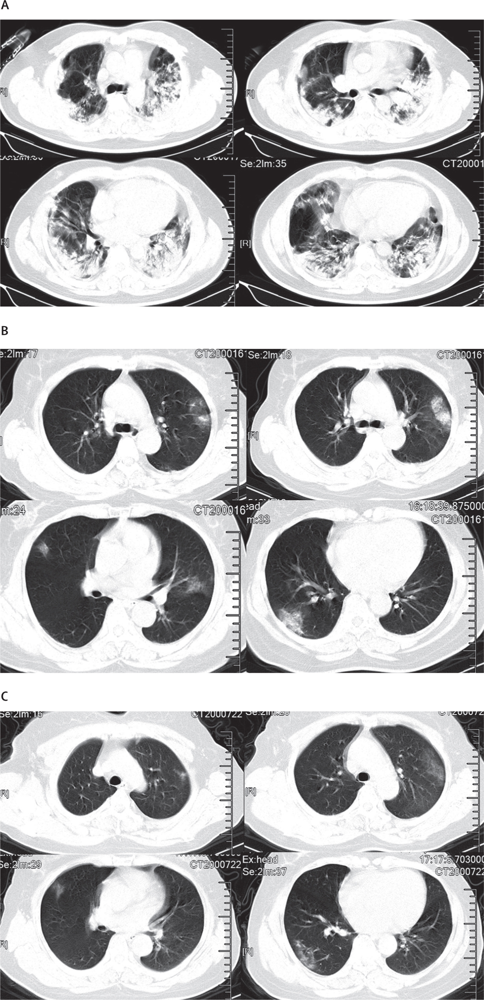

1. 왜 우한폐렴이라고 불리는가?
Clinical features of patients infected with 2019 novel coronavirus in Wuhan, China

논문을 보면 코로나 바이러스 확진 환자 41명중 폐렴 증상이 100%로 나타난걸 알 수 있고 그래서 우한폐렴이라고 불리고 있다.
2. 코로나 바이러스의 시작은?
다음 차트는 화난 수산물 시장 노출여부에 따른 감염된 확진환자를 나타낸 것입니다.
2019.12.01 첫번째 코로나 확진 환자 발생 화난 수산물 시장 접촉 안함.
2019.12.10 3명의 코로나 확진 환자 발생중 2명은 화난 수산물 시장 접촉 안함.
2019.12.31 전염성 경보
2020.01.01 화난 수산물 시장 폐쇄
우한 수산물 시장이 바이러스의 원천이 아닐 수도 있다는 의견을 발표, "첫 확진환자가 시장에 노출이 되지 않았기 때문이다."
바이러스는 그 전부터 있었을 것.
Dr.Daniel Lucey
전염병 전문가(MERS, SARS)
2001 미국 탄저병 사태 Chief
3. 인간에게 치명적인 타격을 가한 코로나 바이러스
인간 코로나바이러스 229E (HCoV-229E)
인간 코로나바이러스 OC43(HCoV-OC43)
중증 급성 호흡기 중후군 코로나바이러스 (SARS-CoV)_사스
인간 코로나바이러스 (HCoV-HL63, 뉴헤븐 코로나바이러스)
인간 코로나바이러스 HKU1
중동 호흡기 증후군 코로나바이러스(MERS-CoV)_메르스
신종 코로나바이러스 (2019-nCoV)
현재까지 신종 코로나 바이러스의 중간 매개체는 확인불가능하다.
4. 왜 박쥐가 바이러스의 매개체?

5. 왜 백신개발은 힘들까?

먼저 DNA와 RNA의 차이점을 알고 있어야한다.
RNA는 한가닥의 폴리뉴클레오타이드로 구성되어 있고,
DNA는 두가닥으로 구성이 되어있다.
이번 신종 코로나 처럼 한가닥으로 구성된 RNA바이러스는 변이가
쉽게 일어나 예방백신을 만들기 어렵고
항원 검출도 힘들다는 특징을 가지고 있다.
6. 과학자들은 알고있었다?
2015년에 발표된 논문에서 SARS같은 코로나 바이러스가
사람에게 다시 나타날 것이라고 말했습니다.
이논문에서의 실험은 SARS-CoV를 인위적으로 변형해 쥐한테 주입하고
백신 접종을 하지만 그중 몇마리만 살아남고 다 즉사했기 때문입니다.
"우리의 연구는 현재 박쥐에서 발생한 SARS-CoV의 위험성을 가지고 있는 바이러스가 다시 출현할 가능성이 높다 항상 주시해야한다."
References
[1] C. Huang et al., Clinical features of patients infected with 2019 novel coronavirus in Wuhan, China. THE LANCET, DOI:https://doi.org/10.1016/S0140-6736(20... (2020).
[2] V.D. Menachery et al., A SARS-like cluster of circulating bat coronaviruses shows potential for human emergence. Nat Med 21, 1508–1513 (2015).
[3] J. Cui et al., Origin and evolution of pathogenic coronaviruses. Nat Rev Microbiol. 17, 181-192 (2019).
[4] I.I. Bogoch et al., Pneumonia of Unknown Etiology in Wuhan, China: Potential for International Spread Via Commercial Air Travel. Journal of Travel Medicine, taaa008, https://doi.org/10.1093/jtm/taaa008 (2020).
[5] S. Perlman, Another Decade, Another Coronavirus. DOI: 10.1056/NEJMe2001126 (2020)
[6] N. Zhu et al., A Novel Coronavirus from Patients with Pneumonia in China. DOI: 10.1056/NEJMoa2001017 (2020)
[7] W. ji et al., Homologous recombination within the spike glycoprotein of the newly identified coronavirus 2019-nCoV may boost cross-species transmission from snake to human. (2020)
[8] B. Yount et al., Reverse genetics with a full-length infectious cDNA of severe acute respiratory syndrome coronavirus. Proc. Natl. Acad. Sci. 100:12995-3000. (2003)
[9] J. Parry, China coronavirus: cases surge as official admits human to human transmission. BMJ. DOI: https://doi.org/10.1136/bmj.m236 (2020)
[10] J.W. Chan et al., A familial cluster of pneumonia associated with the 2019 novel coronavirus indicating person-to-person transmission: a study of a family cluster. THE LANCET. DOI:https://doi.org/10.1016/S0140-6736(20.... (2020)
[11] D.S. Hui et al., The continuing 2019-nCoV epidemic threat of novel coronaviruses to global health — The latest 2019 novel coronavirus outbreak in Wuhan, China. Int. J. Infect. Disease. DOI: https://doi.org/10.1016/j.ijid.2020.0....
(2020)
[12] 미국 존스홉킨스대학 연구팀 제작 실시간 신종 코로나바이러스 현황 (미국 질병통제예방센터, 세계보건기구 등의 데이터 기반) : https://gisanddata.maps.arcgis.com/ap...
[13] WHO, SARS 컨센서스 보고서 : https://www.who.int/csr/sars/en/WHOco...